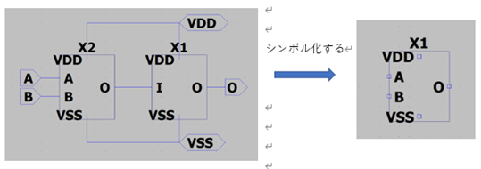
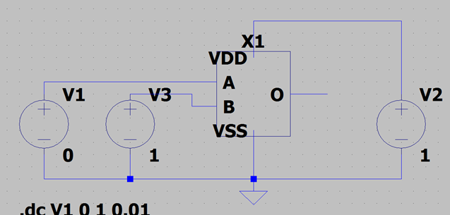

実習2 課題1
課題1では、インバータ回路と 2NAND 回路を用いて AND 回路を作成することを目的としています。AND 回路は、2つの入力がともに「1」である場合に出力が「1」になる基本的な論理回路です。この課題では、AND 回路の構築方法とその動作を確認します。
4.3.1 回路構成の概要
AND 回路は、2つの NAND ゲートにインバータを追加することで作成されます。NAND ゲートは、入力が両方「1」のときに出力が「0」になるため、その出力にインバータを接続することで AND ゲートとして機能させます。
使用する回路:
- インバータ回路(INV_sch)
- 2NAND 回路(2NAND_sch)
4.3.2 回路図の作成
1. 階層化された回路の利用
先に作成したインバータと2NANDのシンボルを使用して、AND 回路を構築します。以下の手順に従って回路図を作成してください。
シンボルの配置
「Select Component」ツールから、保存された「INV_sch」と「2NAND_sch」を回路図に配置します。シンボルを適切に接続し、入力端子と出力端子を設定します。
入力の設定
AとBの2つの入力を設定します。A入力は 2NANDの入力端子1に、B入力は 2NANDの入力端子2に接続します。
インバータの配置
2NAND の出力をインバータに接続し、インバータの出力が最終的な AND 回路の出力となるように配線します。
2. 回路の保存
完成した AND 回路を「AND_sch」として保存してください。
4.3.3 シミュレーションの設定
シミュレーション条件
A入力を0Vから 1V までスイープし、B入力を固定してAND 回路の動作を確認します。
4.3.4 シミュレーション結果の確認
シミュレーション結果から、以下の動作が確認できます。
- AとBが0の場合: 2NAND 回路では出力が1となり、その後インバータで反転され、最終的な出力は0になります。
- Aが1、Bが0の場合: 同様に 2NAND の出力が1となり、インバータにより反転され、最終的な出力は0となります。
- Aが0、Bが1の場合: 2NAND の出力は1ですが、インバータで反転され、出力は0です。
- AとBが1の場合: 2NAND の出力は0となり、インバータによって反転され、最終的な出力は1になります。